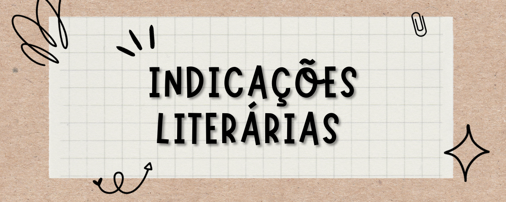

As vezes tudo que precisamos é um bom livro para ler, então o que melhor do que receber novas recomendações diáriamente?
Cada pessoa possui sua preferência pessoal, pensando nisso aqui teremos um pouco de tudo, espero que gostem das recomendações.